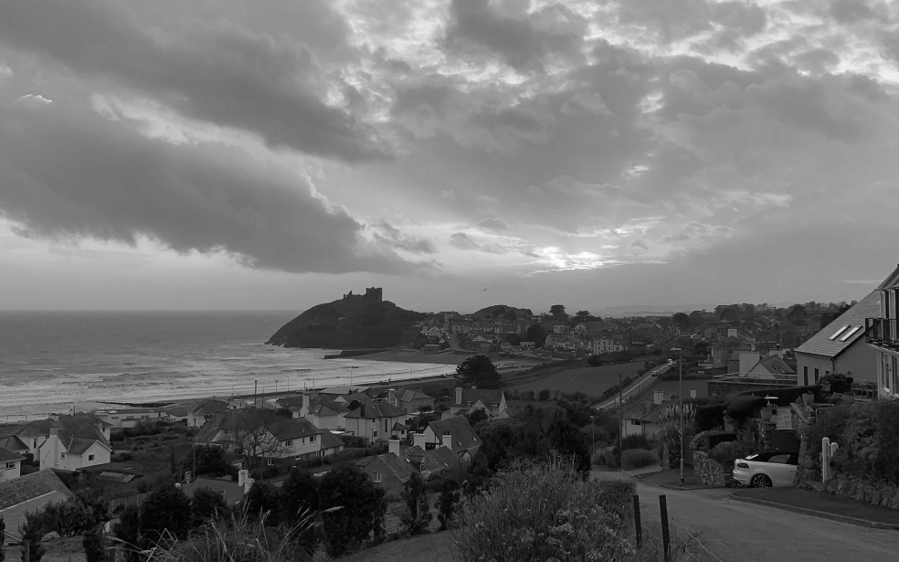
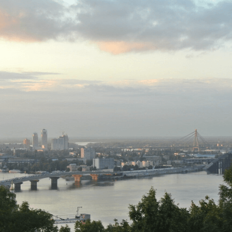
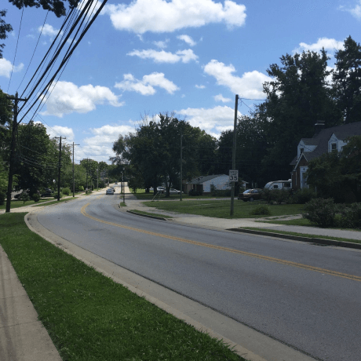

Dari Tanah Air ke Tanah Air
Perjalanan epik dari Kentucky ke Burundi melalui Wales dan Ukraina
Mengetahui sedikit lebih baik tempat asal teman online Anda
Setiap manusia adalah seniman, makhluk yang bebas, dipanggil untuk berpartisipasi dalam mengubah dan membentuk kembali kondisi, pemikiran, dan struktur yang membentuk dan menerangkan kehidupan kita.
Kota Practicum telah mempertemukan para profesional dari berbagai penjuru dunia. Hari ini, Galeri Seni Practicum dengan bangga mempersembahkan cerita dan gambar dari beberapa orang yang mendedikasikan waktu dan upaya mereka untuk membuat para profesional teknologi masa depan di kota ini merasa seperti di rumah sendiri. Masing-masing dari kita memiliki cerita unik tentang tempat kita berasal. Jangan ragu untuk menambahkan cerita Anda sendiri dan karya seni visual yang didedikasikan untuk kampung halaman Anda ke dalam koleksi kami. Dari mana pun Anda berasal, kami senang Anda adalah tetangga kami.


Kyiv, Ukraine
Kyiv (atau Kiev), ibu kota Ukraina, adalah kota besar yang terletak di tepi sungai Dnipro. Tentu saja, tidak ada orang waras yang akan berenang di sungai, kecuali mereka dibesarkan di sini, dalam hal ini mereka mungkin pernah mencobanya. Musim panas di sini panas, dan musim dinginnya berangin, tetapi musim gugur dan musim semi benar-benar menakjubkan.
Kota itu sendiri merupakan campuran arsitektur prarevolusi, pascaperang, dan soviet, semuanya ditaburi dengan balkon yang dimodifikasi. Jika Anda berada di tepi kanan sungai Dnipro, pemandangannya sulit untuk dilalui oleh orang-orang yang bersepeda dan yang memakai sepatu hak tinggi. Tepi kiri dianggap jauh kurang menarik dan bergengsi, bahkan oleh orang-orang yang tinggal di pinggiran paling kanan.
Criccieth, Wales

Reruntuhan abad pertengahan Kastel Criccieth menghadap ke kota di bawah batu yang menjorok ke laut. Menurut perkiraan, kastel itu dibangun oleh Llywelyn yang Agung pada abad ke-13. Sekitar 900 tahun kemudian, Mutiara Wales di Pesisir Snowdonia yang memiliki gayanya sendiri telah menjadi tujuan wisata populer selama bulan-bulan musim panas.
Berjalan kaki singkat dari kastel, Anda dapat menikmati es krim terbaik dunia di Cadwalader, yang bahan rahasianya dikabarkan berasal dari rumput laut lokal. Klaim lain mengenai ketenarannya adalah kenyataan bahwa Criccieth memenangkan penghargaan Wales in Bloom selama lima tahun berturut-turut untuk pajangan bunga spektakuler di sekitar kota. Criccieth juga merupakan rumah bagi David Lloyd George, satu-satunya orang Wales yang pernah memegang jabatan sebagai Perdana Menteri Inggris.
Berea, Amerika Serikat
Reruntuhan abad pertengahan Kastel Criccieth menghadap ke kota di bawah batu yang menjorok ke laut. Menurut perkiraan, kastel itu dibangun oleh Llywelyn yang Agung pada abad ke-13. Sekitar 900 tahun kemudian, Mutiara Wales di Pesisir Snowdonia yang memiliki gayanya sendiri telah menjadi tujuan wisata populer selama bulan-bulan musim panas.
Berjalan kaki singkat dari kastel, Anda dapat menikmati es krim terbaik dunia di Cadwalader, yang bahan rahasianya dikabarkan berasal dari rumput laut lokal. Klaim lain mengenai ketenarannya adalah kenyataan bahwa Criccieth memenangkan penghargaan Wales in Bloom selama lima tahun berturut-turut untuk pajangan bunga spektakuler di sekitar kota. Criccieth juga merupakan rumah bagi David Lloyd George, satu-satunya orang Wales yang pernah memegang jabatan sebagai Perdana Menteri Inggris.
Muramvya, Burundi

Muramvya adalah salah satu dari 18 provinsi Burundi. Di era kerajaan, Muramvya adalah ibu kota kerajaan dan pada tahun 2007, karena lanskap budaya dan alamnya, Muramvya ditambahkan ke Daftar Tentatif Warisan Dunia UNESCO. Kota ini berada di pusat Burundi, di antara ibu kota politik dan ekonomi negara Burundi.
Cuaca sedikit dingin di malam hari, tetapi pada siang hari, Anda akan berpikir Anda berada di surga. Pada ketinggian 2.665 meter (8.743 kaki) di atas permukaan laut, Gunung Teza adalah salah satu tempat terdingin di provinsi ini. Namun, angin sejuk memungkinkannya menjadi salah satu perkebunan teh dan kopi terbesar di negara ini, yang menjadi sumber ekspor Burundi terbesar.
Taman Nasional Kibira, salah satu suaka margasatwa kera terbesar, terletak di empat provinsi, termasuk Muramvya. Taman Nasional ini terletak di puncak pegunungan yang indah di Congo-Nile Divide, dengan ketinggian berkisar antara 1.550 dan 2.660 meter. Taman Nasional ini dipenuhi dengan tumbuh-tumbuhan yang indah, dan sumber bagi berbagai sungai dan aliran yang menyediakan air di seluruh negeri.
Makassar, Indonesia
Makassar adalah pusat ekonomi, budaya, dan transportasi yang penting di wilayah Timur Indonesia,memiliki sejarah panjang sebagai pusat perdagangan dan pelabuhan laut, yang bermula pada abad ke-14 ketika Kerajaan Gowa menjadi salah satu kekuatan dominan di kawasan ini. Kini, Makassar adalah kota metropolitan yang modern, dengan pertumbuhan ekonomi yang pesat dan berbagai infrastruktur yang berkembang.
Salah satu daya tarik utama Makassar adalah pantai-pantai yang indah, seperti Pantai Losari yang terkenal. Pantai ini adalah tempat populer bagi warga lokal dan wisatawan untuk menikmati matahari terbenam yang spektakuler. Kota ini juga memiliki sejumlah tempat bersejarah yang menarik, termasuk Benteng Rotterdam, sebuah benteng Belanda yang berdiri megah di tepi pantai dan menjadi saksi bisu perjalanan sejarah Makassar.
Beragam tradisi, tarian, dan kuliner yang kaya terdapat di Makassar. Salah satu budaya yang terkenal adalah tarian Mappadendang, yang merupakan tarian perang tradisional yang menampilkan gerakan-gerakan dinamis dan indah. Dengan kombinasi kekayaan budaya, sejarah yang kaya, dan pertumbuhan ekonomi yang kuat, Makassar terus menjadi salah satu kota yang menarik di Indonesia.